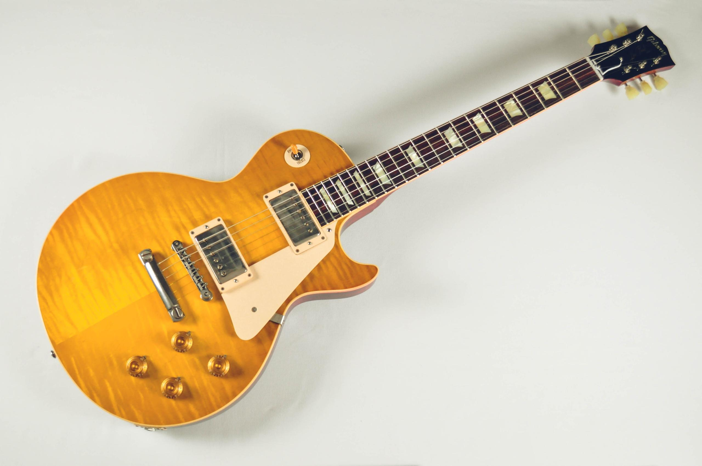
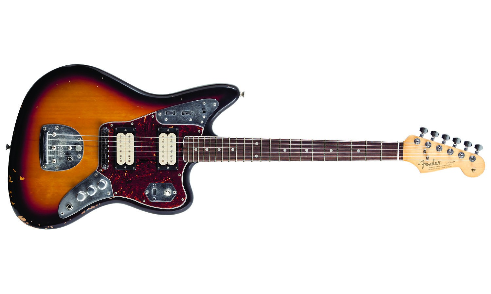

Gibson
В 1880 году компания Gibson Mandolin-Guitar Mfg. Co, Ltd. была официально зарегистрирована в качестве производителя музыкальных инструментов. Вначале дизайн всех инструментов основывался только на проектах Орвилла Гибсона, но, боясь отстать от новых веяний, в 1919 году компания пригласила для сотрудничества дизайнера Ллойда Лоара. В результате, в 20-х годах Гибсон произвели множество инноваций в дизайне гитар и мандолин. В 1922 году была изобретена модель мандолины Gibson F5, которая позже стала известна как «мандолина-блюграсс». Вскоре после этого Гибсон стали ведущими производителями гитар-арктопов. В 1924 году Лоар покинул компанию. В 1930-х годах Гибсон начали проявлять интерес к производству электрических гитар. В 1936 году они выпустили первую электрическую «испанскую» модель ES-150. Также появились первые электрические банджо и мандолины и электрическая гавайская стил-гитара. Во время Второй мировой войны из-за недостатка материалов Гибсон приостановили производство. За всё это время удалось изготовить лишь несколько инструментов из подручных материалов. Вместо этого компания работала на военные нужды. В 1944 году находившуюся в упадке компанию приобрела Chicago Musical Instrument Company Мориса Генри Берлина, который был генеральным директором Гибсон до 1969 года, превратив её в крупнейшего производителя электрогитар и щипковых инструментов в мире. В 1949 году была выпущена модель ES-175, которую можно увидеть в продаже и сегодня. (На изображении Gibson Les Paul.).
1.500$
Fender
Компания «Fender Musical Instruments Corporation» основана Лео Фендером (Clarence «Leo» Fender) в Калифорнии в 1946 году. В 1950 году выпускается электрогитара Fender Esquire с одним звукоснимателем. На основе этой гитары в 1951 году разрабатывается Fender Broadcaster с двумя звукоснимателями. Эта гитара была переименована в Telecaster и сегодня является одной из самых популярных гитар среди профессиональных музыкантов. В этом же году Лео Фендер изобретает первую в истории массовую электрическую бас-гитару Fender Precision Bass, которая и в наши дни является для многих музыкантов и производителей эталоном бас-гитары. В 1954 году Fender выпускает свой первый Stratocaster — легендарную гитару, которая произвела настоящую революцию в мире музыки. Форма этой гитары определила тенденции производства гитар на многие годы вперёд. (На фото Fender-Jaguar).
1600$
test